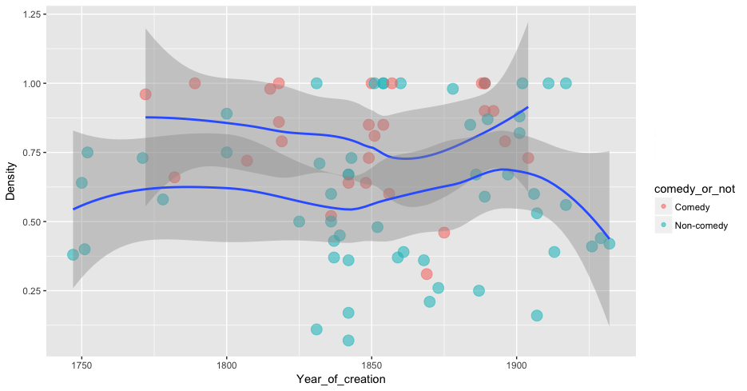

Снова о сетях
5 февраля 2020
Краткая напоминалка
Сеть (граф) — универсальная абстракция
Сеть может служить моделью для многого
Сеть может служить моделью для многого
узлы (вершины)

ребра (дуги)

Совсем формально:
Граф — это упорядоченная пара (V,E), где V— непустое множество вершин или узлов, а E — множество пар (в случае неориентированного графа — неупорядоченных) вершин, называемых рёбрами.
Это важно для работы с сетями в коде

См. networkx.github.io
Простейшая визуализация графа из networkx
См. эту часть туториала networkx
Графы в R
См. igraph.org/r/
Простейшая визуализация в R

См. эту часть туториала igraph
Видео: две визуализации в R
простой plot + трехмерная
Окей, но визуализация — это же просто красивости!
Где анализ?
Что можем посчитать
1. Центральности в сетях

| Узел | Центральность (степень, degree) |
|---|---|
| Даня | 5 |
| Таня | 1 |
| Ваня | 1 |
| Нафаня | 1 |
| Дуня | 1 |
Визуализация

Центральность по посредничеству (betweenness centrality)

Центральность по посредничеству (betweenness centrality)
Есть много разных центральностей

Центральности в питоне (networkx)
Зачем считаем?
Сравнение degree и betweenness
Промежуточность как показатель двуличности

Те же метрики применимы в филологии

Франко Моретти, «Теория сетей и анализ сюжета» (2011)

Моретти говорит
In quantitative terms, Claudius is almost as central as Hamlet (average distance of 1.62, versus 1.45); but in structural terms not so, when we remove him from the network (Figure 8), what happens is that a handful of peripheral characters are affected, but the network as a whole not much. Even if we remove, first Hamlet, and then Claudius, his subtraction does not do much. But if we remove, first Hamlet, and then Horatio (Figure 9), then the fragmentation is so radical that the Ghost and Fortinbras — which is to say, the beginning and the ending of the play — are completely severed from each other and from the rest of the plot. Hamlet no longer exists. And yet, Horatio is slightly less central than Claudius in quantitative terms (1.69 versus 1.62). Why is he so much more important in structural terms?”
Franco Moretti. “Distant Reading”
Переведем в цифры
| Персонаж | Степень | Нагрузка (betweenness) |
|---|---|---|
| Гамлет | 19 | 219,4 |
| Король (Клавдий) | 16 | 131,6 |
| Горацио | 14 | 176,7 |
Betweenness vs degree русской драме

Пушкин на посылках
Другие похожие
Битяговский в «Смерти Иоанна Грозного» А. К. Толстого (двойной агент)

Калачник в «Дмитрие Самозванце» А.Н. Островского (шпион/агент Шуйского)

Битков (соглядатай/двойник Пушкина)

Это все микроуровень? А что с макро?
60 британских романов: средняя степень персонажа
- Elson, D. K., Dames, N. and McKeown, K. (2010), Extracting Social Networks from Literary Fiction, Proceedings of ACL 2010, Uppsala, Sweden.

Структурные свойства 465 немецких пьес

Что такое плотность сети?


Плотность = 0.5 (3/6) Плотность = 1 (6/6)
Измерить плотность в (networkx)
Связана ли плотность с жанром?

А что с плотностью в русском корпусе?

rus.dracor.org
Плотности комедий и не-комедий в RusDraCor
предварительные данные
Какие русские пьесы обладают свойствами "малого мира"?

Исследование Евгении Устиновой (МИЭМ НИУ ВШЭ)
Сетевой анализ: разбиение на подзадачи
Применительно к DH
Подзадачи:
- Формализовать сеть у себя в голове
- Что у нас узел?
- Что у нас связь?
- Получить данные о связях, т.е. извлечь сеть из источника, например, из текста / xml / html
- Визуализировать, проанализировать, интерпретировать сеть (Gephi/Networkx/igraph...)
Путь для любителей ручной разметки
Этот подход часто дает лучшие результаты